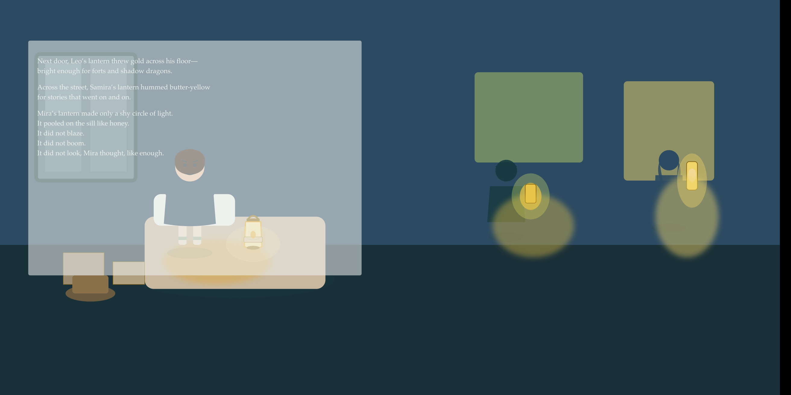
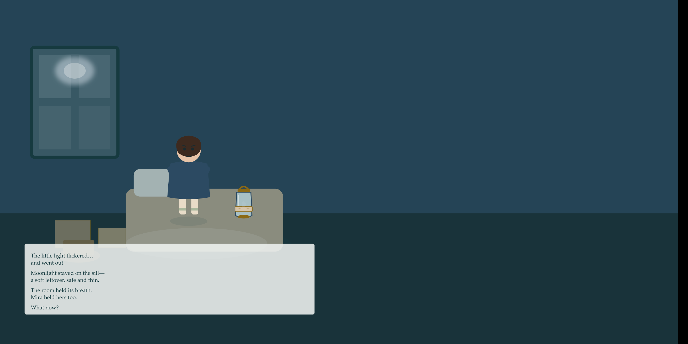

Cover art · Porch Lantern Folklore
Little Lanterns Lane · Book 1
The Softest Glow
A Little Lanterns Lane Story of Quiet Courage
Ages 6–8 32-page 8.5×8.5″ paperback
Soft is still light.
Mira’s new night-lantern won’t blaze like the others—only a shy circle of light. She tries to force it brighter until the glow goes out. With Grandma’s help, she names what is true: homesick, mad, curious, brave-enough. The soft glow returns, and when neighbors visit, quiet light helps everyone settle.
A warm bedtime picture book about quiet belonging—where a shy night-lantern teaches that soft light is still brave light.
Inside the book
Four quiet beats from Mira’s first night on the lane.
- A shy circle of light. A new room, a tea-colored lantern, and a glow that feels too small beside the neighbors’.
- Forced brighter—then gone. Trying to make the lantern blaze only flickers the soft glow out.
- Naming what is true. With Grandma’s help: homesick, mad, curious, brave-enough.
- Soft light that stays. When Leo and Samira visit, quiet light helps the forts hush and the stories settle.
A soft look inside
Softproof glimpses from the print package—atmosphere, not spoilers.




Get the book
The Softest Glow is headed to retail soon. No outbound shop link yet—when the board provides the product URL, this button becomes the storefront.
Format: 32-page · 8.5×8.5″ square color paperback · Book 1 in Little Lanterns Lane.
On Little Lanterns Lane
This is Book 1. Future titles will join the catalog at /books without changing the primary nav—each with its own cover, blurb, and read-aloud support.